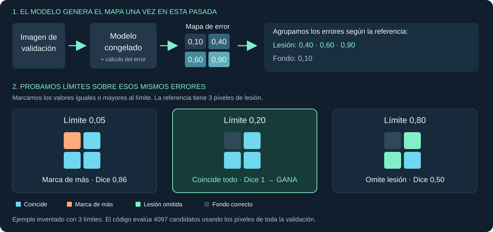

1 / Qué hemos añadido
¿Dónde está
la posible lesión?
Ahora marcamos una zona de la imagen y comprobamos si coincide con la referencia del dataset.
Localizar = señalar dónde.
2 / Qué comparamos
Dos dibujos sobre la misma imagen.
La zona que viene anotada.
La zona que marca nuestro sistema.
Una máscara es ese dibujo: indica qué píxeles pertenecen a la zona.
Dibujos ilustrativos, no imágenes médicas reales.
3 / Cómo sale nuestra zona
Marcamos donde hay más error.
Error pequeño
La reconstrucción se parece → no se marca.
Error grande
La reconstrucción difiere → se marca como posible anomalía.
Ese límite se llama umbral. Un error alto no demuestra por sí solo que haya una lesión.
4 / Cómo elegimos el umbral
Un mapa. Muchos límites. Gana el mejor Dice.

El código agrupa y cuenta los errores en histogramas. Así prueba los 4097 límites sin ejecutar el modelo para cada uno.
El ejemplo simplifica el proceso. El umbral real se elige con toda la validación y quedó en 0,13525390625.
5 / Qué hacemos después
Elegir primero.
Comprobar después.
Elegimos el umbral.
≈ 0,1353
Es el valor que quedó guardado.
Lo usamos en otras imágenes.
No cambiamos el límite para que encaje mejor.
Comparamos con sus referencias para ver qué tal funciona.
Es un umbral nuevo para marcar zonas, distinto del que decide si una imagen completa es anómala.
6 / Qué vemos en la demo
Los colores muestran los aciertos y las diferencias.
Cian
Coinciden sistema y referencia.
Naranja
El sistema marca de más.
Verde
Hay referencia que el sistema no marca.
Dice: 0,736 / 1
Resume la coincidencia de las zonas en 3715 imágenes. No es el porcentaje de imágenes acertadas.
Lo nuevo: dibujar la zona, compararla y medir cuánto coincide.
Resultado de results/dae_seed42/localization.json.